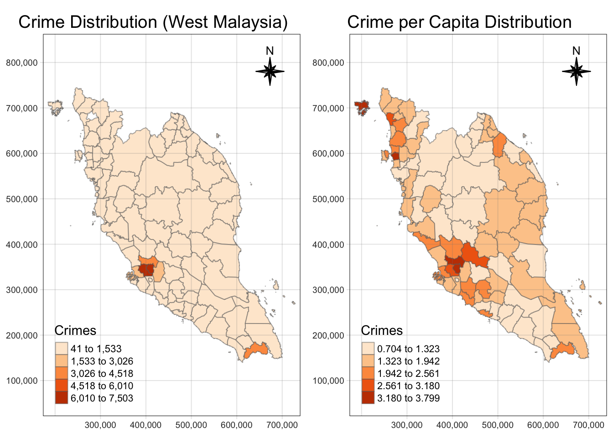
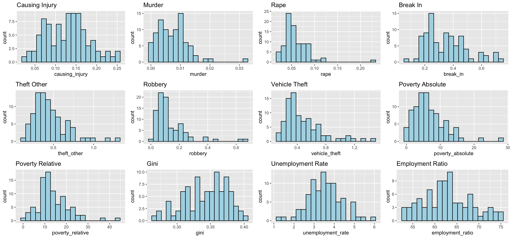
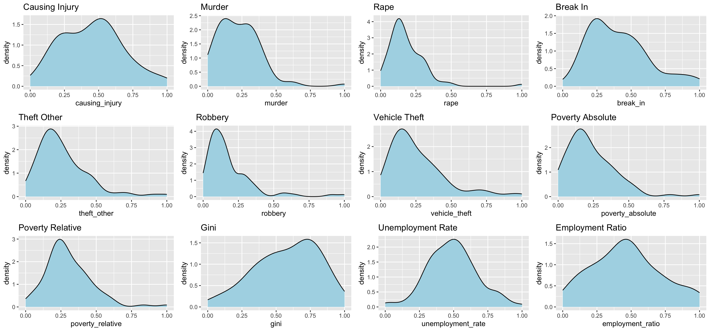
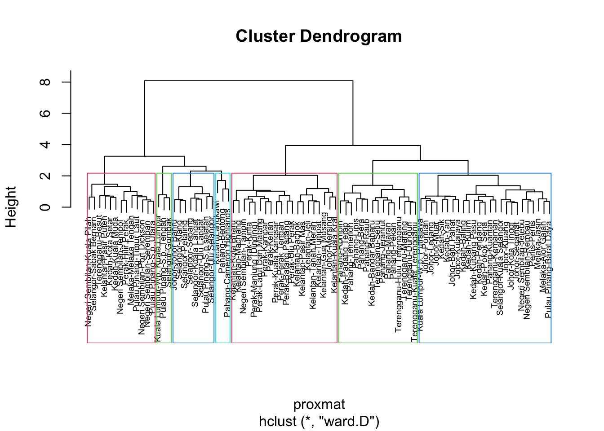

pacman::p_load(sf, st, tidyverse, raster, tmap, tmaptools, ggplot2, spatstat, sfdep, spdep, ClustGeo,
ggpubr, cluster, factoextra, NbClust,
heatmaply, corrplot, psych, tidyverse, GGally)Take-home Exercise 3
Take-home
In this exercise, we will be looking prototyping for my team’s Geospatial Analytics Shiny Application. I am responsible for
1. Introduction
1.1 Responsibility
1.2 Motivation
1.3 Objectives
2. Packages and Data
2.1 Packages Required
2.2 Data Required
There are two datasets being used in this exercise.
Malaysia – Crime by District and Crime Type from data.gov.my in csv format.
Malaysia - Subnational Administrative Boundaries with included administrative regions in shapefile format.
Malaysia – Annual Principal Labour Force Statistics by District from data.gov.my in csv format.
Malaysia – Household Income and Expenditure: Administrative Districts from data.gov.my in csv format.
Malaysia – Enrolment in Government Schools by District from data.gov.my in csv format.
Malaysia – Enrolment in Government Schools by District from data.gov.my in csv format.
We first import the crime rate csv file into R.
crime_df <- read_csv("data/aspatial/crime_district.csv")
population_df <- read_csv("data/aspatial/population_district.csv")Next, we import the administrative regions of Malaysia.
mys_sf <- read_sf(dsn = "data/geospatial/mys_adm_unhcr_20210211_shp",
layer = "mys_admbnda_adm2_unhcr_20210211") %>%
st_transform(crs = 3168)2.3 Wrangling
2.3.1 Data Preparation
print("Unique states in crime_df:")[1] "Unique states in crime_df:"unique(crime_df$state) [1] "Malaysia" "Johor" "Kedah"
[4] "Kelantan" "Melaka" "Negeri Sembilan"
[7] "Pahang" "Perak" "Perlis"
[10] "Pulau Pinang" "Sabah" "Sarawak"
[13] "Selangor" "Terengganu" "W.P. Kuala Lumpur"print("Unique states in population_df:")[1] "Unique states in population_df:"unique(crime_df$state) [1] "Malaysia" "Johor" "Kedah"
[4] "Kelantan" "Melaka" "Negeri Sembilan"
[7] "Pahang" "Perak" "Perlis"
[10] "Pulau Pinang" "Sabah" "Sarawak"
[13] "Selangor" "Terengganu" "W.P. Kuala Lumpur"print("Unique states in mys_sf:")[1] "Unique states in mys_sf:"unique(mys_sf$ADM1_EN) [1] "Johor" "Kedah" "Kelantan"
[4] "W.P. Kuala Lumpur" "W.P. Labuan" "Melaka"
[7] "Negeri Sembilan" "Pahang" "Perak"
[10] "Perlis" "Pulau Pinang" "Sabah"
[13] "Sarawak" "Terengganu" "W.P. Putrajaya"
[16] "Selangor" Convert state and district to upper for matching
crime_df <- crime_df %>%
mutate(year = year(date),
state = toupper(state),
district = toupper(district))
crime_df# A tibble: 19,152 × 7
state district category type date crimes year
<chr> <chr> <chr> <chr> <date> <dbl> <dbl>
1 MALAYSIA ALL assault all 2016-01-01 22327 2016
2 MALAYSIA ALL assault all 2017-01-01 21366 2017
3 MALAYSIA ALL assault all 2018-01-01 16902 2018
4 MALAYSIA ALL assault all 2019-01-01 16489 2019
5 MALAYSIA ALL assault all 2020-01-01 13279 2020
6 MALAYSIA ALL assault all 2021-01-01 11495 2021
7 MALAYSIA ALL assault all 2022-01-01 10348 2022
8 MALAYSIA ALL assault all 2023-01-01 10453 2023
9 MALAYSIA ALL assault causing_injury 2016-01-01 5531 2016
10 MALAYSIA ALL assault causing_injury 2017-01-01 5024 2017
# ℹ 19,142 more rowspopulation_df <- population_df %>%
mutate(year = year(date),
state = toupper(state),
district = toupper(district))
population_df# A tibble: 319,200 × 8
state district date sex age ethnicity population year
<chr> <chr> <date> <chr> <chr> <chr> <dbl> <dbl>
1 JOHOR BATU PAHAT 2020-01-01 both overall overall 495. 2020
2 JOHOR BATU PAHAT 2020-01-01 both overall bumi_malay 311. 2020
3 JOHOR BATU PAHAT 2020-01-01 both overall bumi_other 5.1 2020
4 JOHOR BATU PAHAT 2020-01-01 both overall chinese 140. 2020
5 JOHOR BATU PAHAT 2020-01-01 both overall indian 6.9 2020
6 JOHOR BATU PAHAT 2020-01-01 both overall other_citizen 1.8 2020
7 JOHOR BATU PAHAT 2020-01-01 both overall other_noncitizen 30.2 2020
8 JOHOR BATU PAHAT 2020-01-01 both 0-4 overall 30.3 2020
9 JOHOR BATU PAHAT 2020-01-01 both 0-4 bumi_malay 21.3 2020
10 JOHOR BATU PAHAT 2020-01-01 both 0-4 bumi_other 0.5 2020
# ℹ 319,190 more rowsmys_sf <- mys_sf %>%
mutate(ADM1_EN = toupper(ADM1_EN),
ADM2_EN = toupper(ADM2_EN))
mys_sfSimple feature collection with 144 features and 14 fields
Geometry type: MULTIPOLYGON
Dimension: XY
Bounding box: xmin: 184853.1 ymin: 94420.8 xmax: 2380932 ymax: 829136
Projected CRS: Kertau (RSO) / RSO Malaya (m)
# A tibble: 144 × 15
ADM2_EN ADM2_PCODE ADM2_REF ADM2ALT1EN ADM2ALT2EN ADM1_EN ADM1_PCODE ADM0_EN
* <chr> <chr> <chr> <chr> <chr> <chr> <chr> <chr>
1 BATU PA… MY0101 <NA> <NA> <NA> JOHOR MY01 Malays…
2 JOHOR B… MY0102 <NA> <NA> <NA> JOHOR MY01 Malays…
3 KLUANG MY0103 <NA> <NA> <NA> JOHOR MY01 Malays…
4 KOTA TI… MY0104 <NA> <NA> <NA> JOHOR MY01 Malays…
5 KULAIJA… MY0105 <NA> <NA> <NA> JOHOR MY01 Malays…
6 LEDANG MY0106 <NA> <NA> <NA> JOHOR MY01 Malays…
7 MERSING MY0107 <NA> <NA> <NA> JOHOR MY01 Malays…
8 MUAR MY0108 <NA> <NA> <NA> JOHOR MY01 Malays…
9 PONTIAN MY0109 <NA> <NA> <NA> JOHOR MY01 Malays…
10 SEGAMAT MY0110 <NA> <NA> <NA> JOHOR MY01 Malays…
# ℹ 134 more rows
# ℹ 7 more variables: ADM0_PCODE <chr>, date <date>, validOn <date>,
# validTo <date>, Shape_Leng <dbl>, Shape_Area <dbl>,
# geometry <MULTIPOLYGON [m]>2.3.2 Checking for Mismatch (State)
# Assuming you have two character vectors:
state_crime <- unique(crime_df$state)
state_sf <- unique(mys_sf$ADM1_EN)
# Find states in crime_df that are not in mys_sf
missing_in_sf <- setdiff(state_crime, state_sf)
# Find states in mys_sf that are not in crime_df
missing_in_crime <- setdiff(state_sf, state_crime)
# Print the mismatches
print("States in crime_df not found in mys_sf:")[1] "States in crime_df not found in mys_sf:"print(missing_in_sf)[1] "MALAYSIA"print("States in mys_sf not found in crime_df:")[1] "States in mys_sf not found in crime_df:"print(missing_in_crime)[1] "W.P. LABUAN" "W.P. PUTRAJAYA"2.3.3 Cleaning (State)
However in this case study, for ease of analysis, we choose to focus on West Malaysia, and thus will be filtering out Sarawak, Sabah and Labuan.
mys_sf <- mys_sf %>%
filter(ADM1_EN != 'W.P. LABUAN' & ADM1_EN != 'SABAH' & ADM1_EN != 'SARAWAK') %>%
mutate(ADM1_EN = replace(ADM1_EN, ADM1_EN == 'W.P. KUALA LUMPUR', 'KUALA LUMPUR'),
ADM1_EN = replace(ADM1_EN, ADM1_EN == 'W.P. PUTRAJAYA', 'KUALA LUMPUR'))
mys_sfSimple feature collection with 87 features and 14 fields
Geometry type: MULTIPOLYGON
Dimension: XY
Bounding box: xmin: 184853.1 ymin: 139843.3 xmax: 728635.8 ymax: 744607.2
Projected CRS: Kertau (RSO) / RSO Malaya (m)
# A tibble: 87 × 15
ADM2_EN ADM2_PCODE ADM2_REF ADM2ALT1EN ADM2ALT2EN ADM1_EN ADM1_PCODE ADM0_EN
* <chr> <chr> <chr> <chr> <chr> <chr> <chr> <chr>
1 BATU PA… MY0101 <NA> <NA> <NA> JOHOR MY01 Malays…
2 JOHOR B… MY0102 <NA> <NA> <NA> JOHOR MY01 Malays…
3 KLUANG MY0103 <NA> <NA> <NA> JOHOR MY01 Malays…
4 KOTA TI… MY0104 <NA> <NA> <NA> JOHOR MY01 Malays…
5 KULAIJA… MY0105 <NA> <NA> <NA> JOHOR MY01 Malays…
6 LEDANG MY0106 <NA> <NA> <NA> JOHOR MY01 Malays…
7 MERSING MY0107 <NA> <NA> <NA> JOHOR MY01 Malays…
8 MUAR MY0108 <NA> <NA> <NA> JOHOR MY01 Malays…
9 PONTIAN MY0109 <NA> <NA> <NA> JOHOR MY01 Malays…
10 SEGAMAT MY0110 <NA> <NA> <NA> JOHOR MY01 Malays…
# ℹ 77 more rows
# ℹ 7 more variables: ADM0_PCODE <chr>, date <date>, validOn <date>,
# validTo <date>, Shape_Leng <dbl>, Shape_Area <dbl>,
# geometry <MULTIPOLYGON [m]>crime_df <- crime_df %>%
filter(state != 'MALAYSIA' & state != 'SABAH' & state != 'SARAWAK' &
district != 'ALL' & type != 'all') %>%
mutate(state = replace(state, state == 'W.P. KUALA LUMPUR', 'KUALA LUMPUR'))
crime_df# A tibble: 10,368 × 7
state district category type date crimes year
<chr> <chr> <chr> <chr> <date> <dbl> <dbl>
1 JOHOR BATU PAHAT assault causing_injury 2016-01-01 39 2016
2 JOHOR BATU PAHAT assault causing_injury 2017-01-01 41 2017
3 JOHOR BATU PAHAT assault causing_injury 2018-01-01 28 2018
4 JOHOR BATU PAHAT assault causing_injury 2019-01-01 41 2019
5 JOHOR BATU PAHAT assault causing_injury 2020-01-01 43 2020
6 JOHOR BATU PAHAT assault causing_injury 2021-01-01 22 2021
7 JOHOR BATU PAHAT assault causing_injury 2022-01-01 19 2022
8 JOHOR BATU PAHAT assault causing_injury 2023-01-01 22 2023
9 JOHOR BATU PAHAT assault murder 2016-01-01 6 2016
10 JOHOR BATU PAHAT assault murder 2017-01-01 0 2017
# ℹ 10,358 more rowspopulation_df <- population_df %>%
filter(state != 'SABAH' & state != 'SARAWAK' & state != 'W.P. LABUAN' &
sex == "both" & age == "overall" & ethnicity == "overall" ) %>%
mutate(state = replace(state, state == 'W.P. KUALA LUMPUR', 'KUALA LUMPUR'),
state = replace(state, state == 'W.P. PUTRAJAYA', 'KUALA LUMPUR')) %>%
dplyr::select(state, district, year, population)
population_df# A tibble: 276 × 4
state district year population
<chr> <chr> <dbl> <dbl>
1 JOHOR BATU PAHAT 2020 495.
2 JOHOR JOHOR BAHRU 2020 1711.
3 JOHOR KLUANG 2020 324.
4 JOHOR KOTA TINGGI 2020 222.
5 JOHOR KULAI 2020 330.
6 JOHOR MERSING 2020 78.2
7 JOHOR MUAR 2020 315.
8 JOHOR PONTIAN 2020 173.
9 JOHOR SEGAMAT 2020 198.
10 JOHOR TANGKAK 2020 163.
# ℹ 266 more rows2.3.4 Crime (State-District)
2.3.4.1 Check for Mismatch
crime_df <- crime_df %>% mutate(state_district = paste(state, district, sep = "-"))
mys_sf <- mys_sf %>% mutate(state_district = paste(ADM1_EN, ADM2_EN, sep = "-"))# Assuming you have two character vectors:
state_district_crime <- unique(crime_df$state_district)
state_district_sf <- unique(mys_sf$state_district)
# Find mismatches
missing_in_sf <- setdiff(state_district_crime, state_district_sf)
missing_in_crime <- setdiff(state_district_sf, state_district_crime)
# Print the mismatches
print("State-District combinations in crime_df not found in mys_sf:")[1] "State-District combinations in crime_df not found in mys_sf:"print(missing_in_sf) [1] "JOHOR-ISKANDAR PUTERI" "JOHOR-JOHOR BAHRU SELATAN"
[3] "JOHOR-JOHOR BAHRU UTARA" "JOHOR-NUSAJAYA"
[5] "JOHOR-SERI ALAM" "KEDAH-BANDAR BHARU"
[7] "NEGERI SEMBILAN-NILAI" "PAHANG-CAMERON HIGHLAND"
[9] "PAHANG-KUALA LIPIS" "PERAK-BATU GAJAH"
[11] "PERAK-GERIK" "PERAK-IPOH"
[13] "PERAK-MANJUNG" "PERAK-PENGKALAN HULU"
[15] "PERAK-SELAMA" "PERAK-SUNGAI SIPUT"
[17] "PERAK-TAIPING" "PERAK-TANJONG MALIM"
[19] "PERAK-TAPAH" "PERLIS-ARAU"
[21] "PERLIS-KANGAR" "PERLIS-PADANG BESAR"
[23] "PULAU PINANG-SEBERANG PERAI SELATAN" "PULAU PINANG-SEBERANG PERAI TENGAH"
[25] "PULAU PINANG-SEBERANG PERAI UTARA" "SELANGOR-AMPANG JAYA"
[27] "SELANGOR-HULU SELANGOR" "SELANGOR-KAJANG"
[29] "SELANGOR-KLANG SELATAN" "SELANGOR-KLANG UTARA"
[31] "SELANGOR-PETALING JAYA" "SELANGOR-SERDANG"
[33] "SELANGOR-SG. BULOH" "SELANGOR-SHAH ALAM"
[35] "SELANGOR-SUBANG JAYA" "SELANGOR-SUNGAI BULOH"
[37] "KUALA LUMPUR-BRICKFIELDS" "KUALA LUMPUR-CHERAS"
[39] "KUALA LUMPUR-DANG WANGI" "KUALA LUMPUR-SENTUL"
[41] "KUALA LUMPUR-WANGSA MAJU" print("State-District combinations in mys_sf not found in crime_df:")[1] "State-District combinations in mys_sf not found in crime_df:"print(missing_in_crime) [1] "JOHOR-JOHOR BAHRU" "KEDAH-POKOK SENA"
[3] "KUALA LUMPUR-WP. KUALA LUMPUR" "PAHANG-LIPIS"
[5] "PERAK-BATANG PADANG" "PERAK-ULU PERAK"
[7] "PERAK-KINTA" "PERAK-LARUT DAN MATANG"
[9] "PERAK-MANJUNG (DINDING)" "PERLIS-PERLIS"
[11] "PULAU PINANG-S.P.SELATAN" "PULAU PINANG-S.P. TENGAH"
[13] "PULAU PINANG-S.P. UTARA" "SELANGOR-ULU LANGAT"
[15] "SELANGOR-ULU SELANGOR" "SELANGOR-KLANG"
[17] "SELANGOR-PETALING" 2.3.4.2 Cleaning
crime_df <- crime_df %>%
mutate(district = case_when(
state == "JOHOR" & district %in% c("ISKANDAR PUTERI", "NUSAJAYA", "JOHOR BAHRU SELATAN", "JOHOR BAHRU UTARA", "SERI ALAM") ~ "JOHOR BAHRU",
state == "NEGERI SEMBILAN" & district == "NILAI" ~ "SEREMBAN",
state == "KEDAH" & district == "BANDAR BHARU" ~ "BANDAR BAHARU",
state == "PAHANG" & district == "CAMERON HIGHLAND" ~ "CAMERON HIGHLANDS",
state == "PAHANG" & district == "KUALA LIPIS" ~ "LIPIS",
state == "PERAK" & district %in% c("BATU GAJAH", "IPOH") ~ "KINTA",
state == "PERAK" & district == "GERIK" ~ "ULU PERAK",
state == "PERAK" & district == "MANJUNG" ~ "MANJUNG (DINDING)",
state == "PERAK" & district == "PENGKALAN HULU" ~ "ULU PERAK",
state == "PERAK" & district %in% c("SELAMA", "TAIPING") ~ "LARUT DAN MATANG",
state == "PERAK" & district == "SUNGAI SIPUT" ~ "KUALA KANGSAR",
state == "PERAK" & district %in% c("TANJONG MALIM", "TAPAH") ~ "BATANG PADANG",
state == "PERLIS" & district %in% c("ARAU", "KANGAR", "PADANG BESAR") ~ "PERLIS",
state == "PULAU PINANG" & district == "SEBERANG PERAI SELATAN" ~ "S.P.SELATAN",
state == "PULAU PINANG" & district == "SEBERANG PERAI TENGAH" ~ "S.P. TENGAH",
state == "PULAU PINANG" & district == "SEBERANG PERAI UTARA" ~ "S.P. UTARA",
state == "SELANGOR" & district == "AMPANG JAYA" ~ "GOMBAK",
state == "SELANGOR" & district == "HULU SELANGOR" ~ "ULU SELANGOR",
state == "SELANGOR" & district == "KAJANG" ~ "ULU LANGAT",
state == "SELANGOR" & district %in% c("KLANG SELATAN", "KLANG UTARA") ~ "KLANG",
state == "SELANGOR" & district %in% c("PETALING JAYA", "SERDANG", "SG. BULOH", "SHAH ALAM", "SUBANG JAYA", "SUNGAI BULOH") ~ "PETALING",
state == "KUALA LUMPUR" & district %in% c("BRICKFIELDS", "CHERAS", "DANG WANGI", "SENTUL", "WANGSA MAJU") ~ "WP. KUALA LUMPUR",
TRUE ~ district
)) %>%
group_by(state, district, year, category, type) %>%
summarise(crimes = sum(crimes))tm_shape(mys_sf) +
tm_polygons() +
tm_text("ADM2_EN", size = 0.3)
2.3.4.3 Visualizing Crime Distribution
crime_df_mys <- crime_df %>%
filter(year >= 2019 & year <= 2022) %>%
left_join(mys_sf, by = c("state" = "ADM1_EN", "district" = "ADM2_EN")) %>%
dplyr::select(state, district, year, category, type, crimes, geometry)
crime_df_mys <- st_as_sf(crime_df_mys)
crime_df_mysSimple feature collection with 4128 features and 6 fields
Geometry type: MULTIPOLYGON
Dimension: XY
Bounding box: xmin: 184853.1 ymin: 139843.3 xmax: 728635.8 ymax: 744607.2
Projected CRS: Kertau (RSO) / RSO Malaya (m)
# A tibble: 4,128 × 7
# Groups: state, district, year, category [688]
state district year category type crimes geometry
<chr> <chr> <dbl> <chr> <chr> <dbl> <MULTIPOLYGON [m]>
1 JOHOR BATU PAHAT 2019 assault causing_inj… 41 (((556714.6 192051.6, 55…
2 JOHOR BATU PAHAT 2019 assault murder 3 (((556714.6 192051.6, 55…
3 JOHOR BATU PAHAT 2019 assault rape 29 (((556714.6 192051.6, 55…
4 JOHOR BATU PAHAT 2019 assault robbery_gan… 0 (((556714.6 192051.6, 55…
5 JOHOR BATU PAHAT 2019 assault robbery_gan… 37 (((556714.6 192051.6, 55…
6 JOHOR BATU PAHAT 2019 assault robbery_sol… 0 (((556714.6 192051.6, 55…
7 JOHOR BATU PAHAT 2019 assault robbery_sol… 29 (((556714.6 192051.6, 55…
8 JOHOR BATU PAHAT 2019 property break_in 157 (((556714.6 192051.6, 55…
9 JOHOR BATU PAHAT 2019 property theft_other 127 (((556714.6 192051.6, 55…
10 JOHOR BATU PAHAT 2019 property theft_vehic… 4 (((556714.6 192051.6, 55…
# ℹ 4,118 more rowstmap_mode("plot")
crime_df_mys_grp <- crime_df_mys %>%
group_by(state, district) %>%
summarize(total_crimes = sum(crimes))
choro <- tm_shape(crime_df_mys_grp) +
tm_fill("total_crimes",
style = "pretty",
palette = "Blues",
title = "Crimes") +
tm_layout(main.title = "Distribution of crime in West Malaysia",
main.title.position = "center",
main.title.size = 1.2,
legend.height = 0.45,
legend.width = 0.35,
frame = TRUE) +
tm_borders(alpha = 0.5) +
tm_compass(type="8star", size = 2) +
tm_scale_bar() +
tm_grid(alpha =0.2)
choro
2.3.5 Population (State-District)
2.3.5.1 Check for Mismatch
The year 2019 is missing from data set, hence we will map year 2020 -> 2019.
population_row <- population_df %>%
filter(year == 2020) %>%
mutate(year = 2019)
population_df <- bind_rows(population_df, population_row)
unique(population_df$year)[1] 2020 2021 2022 2019population_df <- population_df %>% mutate(state_district = paste(state, district, sep = "-"))# Assuming you have two character vectors:
state_district_population <- unique(population_df$state_district)
# Find mismatches
missing_in_sf <- setdiff(state_district_population, state_district_sf)
missing_in_population <- setdiff(state_district_sf, state_district_population)
# Print the mismatches
print("State-District combinations in population_df not found in mys_sf:")[1] "State-District combinations in population_df not found in mys_sf:"print(missing_in_sf) [1] "JOHOR-KULAI" "JOHOR-TANGKAK"
[3] "KELANTAN-KECIL LOJING" "PERAK-BAGAN DATUK"
[5] "PERAK-HULU PERAK" "PERAK-MANJUNG"
[7] "PERAK-MUALLIM" "PERAK-SELAMA"
[9] "PULAU PINANG-SEBERANG PERAI SELATAN" "PULAU PINANG-SEBERANG PERAI TENGAH"
[11] "PULAU PINANG-SEBERANG PERAI UTARA" "TERENGGANU-KUALA NERUS"
[13] "KUALA LUMPUR-W.P. KUALA LUMPUR" "PAHANG-CAMERON HIGHLAND"
[15] "PULAU PINANG-SP SELATAN" "PULAU PINANG-SP TENGAH"
[17] "PULAU PINANG-SP UTARA" print("State-District combinations in mys_sf not found in population_df:")[1] "State-District combinations in mys_sf not found in population_df:"print(missing_in_population)[1] "JOHOR-KULAIJAYA" "JOHOR-LEDANG"
[3] "KUALA LUMPUR-WP. KUALA LUMPUR" "PERAK-ULU PERAK"
[5] "PERAK-MANJUNG (DINDING)" "PULAU PINANG-S.P.SELATAN"
[7] "PULAU PINANG-S.P. TENGAH" "PULAU PINANG-S.P. UTARA" 2.3.5.2 Cleaning
population_df <- population_df %>%
mutate(district = case_when(
state == "JOHOR" & district == "KULAI" ~ "KULAIJAYA",
state == "JOHOR" & district == "TANGKAK" ~ "LEDANG",
state == "KELANTAN" & district == "KECIL LOJING" ~ "GUA MUSANG",
state == "PAHANG" & district == "CAMERON HIGHLAND" ~ "CAMERON HIGHLANDS",
state == "PERAK" & district == "HULU PERAK" ~ "ULU PERAK",
state == "PERAK" & district == "BAGAN DATUK" ~ "HILIR PERAK",
state == "PERAK" & district == "MANJUNG" ~ "MANJUNG (DINDING)",
state == "PERAK" & district == "MUALLIM" ~ "BATANG PADANG",
state == "PERAK" & district == "SELAMA" ~ "LARUT DAN MATANG",
state == "PULAU PINANG" & district == "SEBERANG PERAI SELATAN" ~ "S.P.SELATAN",
state == "PULAU PINANG" & district == "SEBERANG PERAI TENGAH" ~ "S.P. TENGAH",
state == "PULAU PINANG" & district == "SEBERANG PERAI UTARA" ~ "S.P. UTARA",
state == "PULAU PINANG" & district == "SP SELATAN" ~ "S.P.SELATAN",
state == "PULAU PINANG" & district == "SP TENGAH" ~ "S.P. TENGAH",
state == "PULAU PINANG" & district == "SP UTARA" ~ "S.P. UTARA",
state == "TERENGGANU" & district == "KUALA NERUS" ~ "KUALA TERENGGANU",
state == "KUALA LUMPUR" & district == "W.P. KUALA LUMPUR" ~ "WP. KUALA LUMPUR",
TRUE ~ district
)) %>%
group_by(state, district, year) %>%
summarise(population = sum(population))
population_df# A tibble: 348 × 4
# Groups: state, district [87]
state district year population
<chr> <chr> <dbl> <dbl>
1 JOHOR BATU PAHAT 2019 495.
2 JOHOR BATU PAHAT 2020 495.
3 JOHOR BATU PAHAT 2021 497.
4 JOHOR BATU PAHAT 2022 498.
5 JOHOR JOHOR BAHRU 2019 1711.
6 JOHOR JOHOR BAHRU 2020 1711.
7 JOHOR JOHOR BAHRU 2021 1715.
8 JOHOR JOHOR BAHRU 2022 1724.
9 JOHOR KLUANG 2019 324.
10 JOHOR KLUANG 2020 324.
# ℹ 338 more rowstm_shape(mys_sf) +
tm_polygons() +
tm_text("ADM2_EN", size = 0.3)
2.3.6 Joining
2.3.6.1 Join with Population Data
crime_df_mys <- crime_df %>%
filter(year >= 2019 & year <= 2022) %>%
left_join(population_df, by = c("state", "district", "year")) %>%
mutate(crimes_pc = crimes/population) %>%
dplyr::select(state, district, year, category, type, crimes, crimes_pc, population)2.3.6.2 Create for Pokok Sena District
pokok_sena_rows <- crime_df_mys %>%
filter(state == "KEDAH") %>%
group_by(state, year, category, type) %>%
summarise(crimes = mean(crimes),
crimes_pc = mean(crimes_pc),
population = mean(population)) %>%
mutate(district = "POKOK SENA")
pokok_sena_rows# A tibble: 48 × 8
# Groups: state, year, category [8]
state year category type crimes crimes_pc population district
<chr> <dbl> <chr> <chr> <dbl> <dbl> <dbl> <chr>
1 KEDAH 2019 assault causing_injury 29.8 0.140 189. POKOK S…
2 KEDAH 2019 assault murder 1.82 0.0129 189. POKOK S…
3 KEDAH 2019 assault rape 13.2 0.0752 189. POKOK S…
4 KEDAH 2019 assault robbery_gang_armed 0.182 0.00155 189. POKOK S…
5 KEDAH 2019 assault robbery_gang_unar… 25.3 0.0992 189. POKOK S…
6 KEDAH 2019 assault robbery_solo_armed 0.182 0.000410 189. POKOK S…
7 KEDAH 2019 assault robbery_solo_unar… 14.7 0.0590 189. POKOK S…
8 KEDAH 2019 property break_in 103. 0.440 189. POKOK S…
9 KEDAH 2019 property theft_other 86.9 0.479 189. POKOK S…
10 KEDAH 2019 property theft_vehicle_lor… 7.09 0.0202 189. POKOK S…
# ℹ 38 more rowscrime_df_mys <- bind_rows(crime_df_mys, pokok_sena_rows)2.3.6.3 Join with District Boundary
crime_df_mys <- crime_df_mys %>%
left_join(mys_sf, by = c("state" = "ADM1_EN", "district" = "ADM2_EN")) %>%
dplyr::select(state, district, year, category, type, crimes, crimes_pc, population, geometry)
crime_df_mys <- st_as_sf(crime_df_mys)
crime_df_mysSimple feature collection with 4176 features and 8 fields
Geometry type: MULTIPOLYGON
Dimension: XY
Bounding box: xmin: 184853.1 ymin: 139843.3 xmax: 728635.8 ymax: 744607.2
Projected CRS: Kertau (RSO) / RSO Malaya (m)
# A tibble: 4,176 × 9
# Groups: state, district, year, category [696]
state district year category type crimes crimes_pc population
<chr> <chr> <dbl> <chr> <chr> <dbl> <dbl> <dbl>
1 JOHOR BATU PAHAT 2019 assault causing_injury 41 0.0828 495.
2 JOHOR BATU PAHAT 2019 assault murder 3 0.00606 495.
3 JOHOR BATU PAHAT 2019 assault rape 29 0.0586 495.
4 JOHOR BATU PAHAT 2019 assault robbery_gang_arm… 0 0 495.
5 JOHOR BATU PAHAT 2019 assault robbery_gang_una… 37 0.0747 495.
6 JOHOR BATU PAHAT 2019 assault robbery_solo_arm… 0 0 495.
7 JOHOR BATU PAHAT 2019 assault robbery_solo_una… 29 0.0586 495.
8 JOHOR BATU PAHAT 2019 property break_in 157 0.317 495.
9 JOHOR BATU PAHAT 2019 property theft_other 127 0.256 495.
10 JOHOR BATU PAHAT 2019 property theft_vehicle_lo… 4 0.00808 495.
# ℹ 4,166 more rows
# ℹ 1 more variable: geometry <MULTIPOLYGON [m]>2.3.7 Visualizing the distribution of crime
tmap_mode("plot")
crime_df_mys_grp <- crime_df_mys %>%
group_by(state, district) %>%
summarize(total_crimes_pc = sum(crimes_pc)/4)
choro <- tm_shape(crime_df_mys_grp) +
tm_fill("total_crimes_pc",
style = "pretty",
palette = "Blues",
title = "Crimes") +
tm_layout(main.title = "Distribution of crime in West Malaysia",
main.title.position = "center",
main.title.size = 1.2,
legend.height = 0.45,
legend.width = 0.35,
frame = TRUE) +
tm_borders(alpha = 0.5) +
tm_compass(type="8star", size = 2) +
tm_scale_bar() +
tm_grid(alpha =0.2)
choro
2.3.8 Correlation Plot
piv_crime_df_mys <- crime_df_mys %>%
mutate(cat_type = paste(category, type, sep = "-")) %>%
select(-category, -type, -crimes, -population) %>%
pivot_wider(
names_from = cat_type,
values_from = crimes_pc,
values_fill = 0
)
corrplot.mixed(cor(st_drop_geometry(piv_crime_df_mys)[, 4:15]),
lower = "ellipse",
upper = "number",
tl.pos = "lt",
diag = "l",
tl.col = "black",
tl.srt = 45,
tl.cex = 0.5)To further narrow our correlation analysis we will group robbery as one category and vehicle theft as the other
piv_crime_df_mys <- piv_crime_df_mys %>%
mutate(
robbery = `assault-robbery_gang_armed` + `assault-robbery_gang_unarmed` +
`assault-robbery_solo_armed` + `assault-robbery_solo_unarmed`,
vehicle_theft = `property-theft_vehicle_lorry` + `property-theft_vehicle_motorcar` +
`property-theft_vehicle_motorcycle`
) %>%
select(-`assault-robbery_gang_armed`, -`assault-robbery_gang_unarmed`,
-`assault-robbery_solo_armed`, -`assault-robbery_solo_unarmed`,
-`property-theft_vehicle_lorry`, -`property-theft_vehicle_motorcar`,
-`property-theft_vehicle_motorcycle`) %>%
rename_with(~str_remove(., "^assault-|^property-"))
piv_crime_df_mysSimple feature collection with 348 features and 10 fields
Geometry type: MULTIPOLYGON
Dimension: XY
Bounding box: xmin: 184853.1 ymin: 139843.3 xmax: 728635.8 ymax: 744607.2
Projected CRS: Kertau (RSO) / RSO Malaya (m)
# A tibble: 348 × 11
state district year geometry causing_injury murder rape
<chr> <chr> <dbl> <MULTIPOLYGON [m]> <dbl> <dbl> <dbl>
1 JOHOR BATU PAH… 2019 (((556714.6 192051.6, 55… 0.0828 0.00606 0.0586
2 JOHOR BATU PAH… 2020 (((556714.6 192051.6, 55… 0.0868 0.00606 0.0323
3 JOHOR BATU PAH… 2021 (((556714.6 192051.6, 55… 0.0442 0 0.0362
4 JOHOR BATU PAH… 2022 (((556714.6 192051.6, 55… 0.0382 0.00603 0.0261
5 JOHOR JOHOR BA… 2019 (((664760.7 157664.3, 66… 0.212 0.0117 0.0590
6 JOHOR JOHOR BA… 2020 (((664760.7 157664.3, 66… 0.140 0.00993 0.0392
7 JOHOR JOHOR BA… 2021 (((664760.7 157664.3, 66… 0.113 0.00466 0.0402
8 JOHOR JOHOR BA… 2022 (((664760.7 157664.3, 66… 0.101 0.00986 0.0365
9 JOHOR KLUANG 2019 (((583499.3 195230.8, 58… 0.185 0.0124 0.0525
10 JOHOR KLUANG 2020 (((583499.3 195230.8, 58… 0.133 0.00618 0.0494
# ℹ 338 more rows
# ℹ 4 more variables: break_in <dbl>, theft_other <dbl>, robbery <dbl>,
# vehicle_theft <dbl>corrplot.mixed(cor(st_drop_geometry(piv_crime_df_mys)[, 4:10]),
lower = "ellipse",
upper = "number",
tl.pos = "lt",
diag = "l",
tl.col = "black",
tl.srt = 45,
tl.cex = 0.5)2.4 Data Enrichment
We realize we ran into some issue with the dataset, as they were too highly correlated, hence we decided enrich our data with several more relevant datasets which may affect crime rates such enrollment in schools, labour participation, and poverty by district
poverty_df <- read_csv("data/aspatial/poverty_district.csv")
inequality_df <- read_csv("data/aspatial/inequality_district.csv")
labour_df <- read_csv("data/aspatial/labour_district.csv")2.4.1 Clearning (State)
print("Unique states in mys_sf:")[1] "Unique states in mys_sf:"unique(mys_sf$ADM1_EN) [1] "JOHOR" "KEDAH" "KELANTAN" "KUALA LUMPUR"
[5] "MELAKA" "NEGERI SEMBILAN" "PAHANG" "PERAK"
[9] "PERLIS" "PULAU PINANG" "TERENGGANU" "SELANGOR" print("Unique states in poverty_df:")[1] "Unique states in poverty_df:"unique(poverty_df$state) [1] "Johor" "Kedah" "Kelantan"
[4] "Melaka" "Negeri Sembilan" "Pahang"
[7] "Perak" "Perlis" "Pulau Pinang"
[10] "Sabah" "Sarawak" "Selangor"
[13] "Terengganu" "W.P. Kuala Lumpur" "W.P. Labuan"
[16] "W.P. Putrajaya" print("Unique states in inequality_df:")[1] "Unique states in inequality_df:"unique(inequality_df$state) [1] "Johor" "Kedah" "Kelantan"
[4] "Melaka" "Negeri Sembilan" "Pahang"
[7] "Perak" "Perlis" "Pulau Pinang"
[10] "Sabah" "Sarawak" "Selangor"
[13] "Terengganu" "W.P. Kuala Lumpur" "W.P. Labuan"
[16] "W.P. Putrajaya" print("Unique states in labour_df:")[1] "Unique states in labour_df:"unique(labour_df$state) [1] "Johor" "Kedah" "Kelantan" "Melaka"
[5] "Negeri Sembilan" "Pahang" "Perak" "Pulau Pinang"
[9] "Sabah" "Sarawak" "Selangor" "Terengganu" poverty_df <- poverty_df %>%
mutate(year = year(date),
state = toupper(state),
district = toupper(district)) %>%
filter(state != 'SABAH' & state != 'SARAWAK' & state != 'W.P. LABUAN') %>%
mutate(state = replace(state, state == 'W.P. KUALA LUMPUR', 'KUALA LUMPUR'),
state = replace(state, state == 'W.P. PUTRAJAYA', 'KUALA LUMPUR'))
inequality_df <- inequality_df %>%
mutate(year = year(date),
state = toupper(state),
district = toupper(district)) %>%
filter(state != 'SABAH' & state != 'SARAWAK' & state != 'W.P. LABUAN') %>%
mutate(state = replace(state, state == 'W.P. KUALA LUMPUR', 'KUALA LUMPUR'),
state = replace(state, state == 'W.P. PUTRAJAYA', 'KUALA LUMPUR'))labour_df <- labour_df %>%
mutate(year = year(date),
state = toupper(state),
district = toupper(district)) %>%
filter(state != 'SABAH' & state != 'SARAWAK')print("Unique states & years in mys_sf:")[1] "Unique states & years in mys_sf:"sort(unique(mys_sf$ADM1_EN)) [1] "JOHOR" "KEDAH" "KELANTAN" "KUALA LUMPUR"
[5] "MELAKA" "NEGERI SEMBILAN" "PAHANG" "PERAK"
[9] "PERLIS" "PULAU PINANG" "SELANGOR" "TERENGGANU" print("Unique states & years in poverty_df:")[1] "Unique states & years in poverty_df:"sort(unique(poverty_df$state)) [1] "JOHOR" "KEDAH" "KELANTAN" "KUALA LUMPUR"
[5] "MELAKA" "NEGERI SEMBILAN" "PAHANG" "PERAK"
[9] "PERLIS" "PULAU PINANG" "SELANGOR" "TERENGGANU" sort(unique(poverty_df$year))[1] 2019 2022print("Unique states & years in inequality_df:")[1] "Unique states & years in inequality_df:"sort(unique(inequality_df$state)) [1] "JOHOR" "KEDAH" "KELANTAN" "KUALA LUMPUR"
[5] "MELAKA" "NEGERI SEMBILAN" "PAHANG" "PERAK"
[9] "PERLIS" "PULAU PINANG" "SELANGOR" "TERENGGANU" sort(unique(inequality_df$year))[1] 2019 2022print("Unique states & years in labour_df:")[1] "Unique states & years in labour_df:"sort(unique(labour_df$state)) [1] "JOHOR" "KEDAH" "KELANTAN" "MELAKA"
[5] "NEGERI SEMBILAN" "PAHANG" "PERAK" "PULAU PINANG"
[9] "SELANGOR" "TERENGGANU" sort(unique(labour_df$year))[1] 2019 2020 2021 2022From the data we identified 2 issues: 1. Poverty and Inequality data is missing years 2020 and 2021 2. Labour data is missing PERLIS, KUALA LUMPUR and PUTRAJAYA
2.4.2 Poverty & Inequaltiy (State-District)
2.4.2.1 Duplicating Data
Since years 2020 and 2021 are missing from data set, we will do a best effort mapping for year: - 2020 -> 2019 - 2021 -> 2022
poverty_rows <- poverty_df %>%
mutate(year = ifelse(year == 2019, 2020, 2021))
poverty_df <- bind_rows(poverty_df, poverty_rows)
unique(poverty_df$year)[1] 2019 2022 2020 2021inequality_rows <- inequality_df %>%
mutate(year = ifelse(year == 2019, 2020, 2021))
inequality_df <- bind_rows(inequality_df, inequality_rows)
unique(inequality_df$year)[1] 2019 2022 2020 20212.4.2.2 Check for Mismatch
Creating rows for state-district
poverty_df <- poverty_df %>% mutate(state_district = paste(state, district, sep = "-"))
inequality_df <- inequality_df %>% mutate(state_district = paste(state, district, sep = "-"))# Assuming you have two character vectors:
state_district_poverty <- unique(poverty_df$state_district)
# Find mismatches
missing_in_sf <- setdiff(state_district_poverty, state_district_sf)
missing_in_poverty <- setdiff(state_district_sf, state_district_poverty)
# Print the mismatches
print("State-District combinations in poverty_df not found in mys_sf:")[1] "State-District combinations in poverty_df not found in mys_sf:"print(missing_in_sf) [1] "JOHOR-KULAI" "JOHOR-TANGKAK"
[3] "KELANTAN-KECIL LOJING" "PERAK-BAGAN DATUK"
[5] "PERAK-HULU PERAK" "PERAK-MANJUNG"
[7] "PERAK-MUALLIM" "PERAK-SELAMA"
[9] "PULAU PINANG-SEBERANG PERAI SELATAN" "PULAU PINANG-SEBERANG PERAI TENGAH"
[11] "PULAU PINANG-SEBERANG PERAI UTARA" "TERENGGANU-KUALA NERUS"
[13] "KUALA LUMPUR-W.P. KUALA LUMPUR" print("State-District combinations in mys_sf not found in poverty_df:")[1] "State-District combinations in mys_sf not found in poverty_df:"print(missing_in_poverty)[1] "JOHOR-KULAIJAYA" "JOHOR-LEDANG"
[3] "KUALA LUMPUR-WP. KUALA LUMPUR" "PERAK-ULU PERAK"
[5] "PERAK-MANJUNG (DINDING)" "PULAU PINANG-S.P.SELATAN"
[7] "PULAU PINANG-S.P. TENGAH" "PULAU PINANG-S.P. UTARA" 2.4.2.3 Cleaning
poverty_df <- poverty_df %>%
mutate(district = case_when(
state == "JOHOR" & district == "KULAI" ~ "KULAIJAYA",
state == "JOHOR" & district == "TANGKAK" ~ "LEDANG",
state == "KELANTAN" & district == "KECIL LOJING" ~ "GUA MUSANG",
state == "PERAK" & district == "HULU PERAK" ~ "ULU PERAK",
state == "PERAK" & district == "BAGAN DATUK" ~ "HILIR PERAK",
state == "PERAK" & district == "MANJUNG" ~ "MANJUNG (DINDING)",
state == "PERAK" & district == "MUALLIM" ~ "BATANG PADANG",
state == "PERAK" & district == "SELAMA" ~ "LARUT DAN MATANG",
state == "PULAU PINANG" & district == "SEBERANG PERAI SELATAN" ~ "S.P.SELATAN",
state == "PULAU PINANG" & district == "SEBERANG PERAI TENGAH" ~ "S.P. TENGAH",
state == "PULAU PINANG" & district == "SEBERANG PERAI UTARA" ~ "S.P. UTARA",
state == "TERENGGANU" & district == "KUALA NERUS" ~ "KUALA TERENGGANU",
state == "KUALA LUMPUR" & district == "W.P. KUALA LUMPUR" ~ "WP. KUALA LUMPUR",
TRUE ~ district
))
poverty_df# A tibble: 366 × 7
state district date poverty_absolute poverty_relative year
<chr> <chr> <date> <dbl> <dbl> <dbl>
1 JOHOR BATU PAHAT 2019-01-01 2.9 9 2019
2 JOHOR BATU PAHAT 2022-01-01 5.1 19.4 2022
3 JOHOR JOHOR BAHRU 2019-01-01 3.3 12.8 2019
4 JOHOR JOHOR BAHRU 2022-01-01 3.7 10.4 2022
5 JOHOR KLUANG 2019-01-01 5 24.9 2019
6 JOHOR KLUANG 2022-01-01 7.2 27.4 2022
7 JOHOR KOTA TINGGI 2019-01-01 6 20.8 2019
8 JOHOR KOTA TINGGI 2022-01-01 5 17 2022
9 JOHOR KULAIJAYA 2019-01-01 3.2 10.1 2019
10 JOHOR KULAIJAYA 2022-01-01 0.4 7.4 2022
# ℹ 356 more rows
# ℹ 1 more variable: state_district <chr>inequality_df <- inequality_df %>%
mutate(district = case_when(
state == "JOHOR" & district == "KULAI" ~ "KULAIJAYA",
state == "JOHOR" & district == "TANGKAK" ~ "LEDANG",
state == "KELANTAN" & district == "KECIL LOJING" ~ "GUA MUSANG",
state == "PERAK" & district == "HULU PERAK" ~ "ULU PERAK",
state == "PERAK" & district == "BAGAN DATUK" ~ "HILIR PERAK",
state == "PERAK" & district == "MANJUNG" ~ "MANJUNG (DINDING)",
state == "PERAK" & district == "MUALLIM" ~ "BATANG PADANG",
state == "PERAK" & district == "SELAMA" ~ "LARUT DAN MATANG",
state == "PULAU PINANG" & district == "SEBERANG PERAI SELATAN" ~ "S.P.SELATAN",
state == "PULAU PINANG" & district == "SEBERANG PERAI TENGAH" ~ "S.P. TENGAH",
state == "PULAU PINANG" & district == "SEBERANG PERAI UTARA" ~ "S.P. UTARA",
state == "TERENGGANU" & district == "KUALA NERUS" ~ "KUALA TERENGGANU",
state == "KUALA LUMPUR" & district == "W.P. KUALA LUMPUR" ~ "WP. KUALA LUMPUR",
TRUE ~ district
))
inequality_df# A tibble: 366 × 6
state district date gini year state_district
<chr> <chr> <date> <dbl> <dbl> <chr>
1 JOHOR BATU PAHAT 2019-01-01 0.295 2019 JOHOR-BATU PAHAT
2 JOHOR BATU PAHAT 2022-01-01 0.338 2022 JOHOR-BATU PAHAT
3 JOHOR JOHOR BAHRU 2019-01-01 0.388 2019 JOHOR-JOHOR BAHRU
4 JOHOR JOHOR BAHRU 2022-01-01 0.359 2022 JOHOR-JOHOR BAHRU
5 JOHOR KLUANG 2019-01-01 0.333 2019 JOHOR-KLUANG
6 JOHOR KLUANG 2022-01-01 0.354 2022 JOHOR-KLUANG
7 JOHOR KOTA TINGGI 2019-01-01 0.361 2019 JOHOR-KOTA TINGGI
8 JOHOR KOTA TINGGI 2022-01-01 0.343 2022 JOHOR-KOTA TINGGI
9 JOHOR KULAIJAYA 2019-01-01 0.324 2019 JOHOR-KULAI
10 JOHOR KULAIJAYA 2022-01-01 0.337 2022 JOHOR-KULAI
# ℹ 356 more rows# Assuming you have two character vectors:
poverty_df <- poverty_df %>% mutate(state_district = paste(state, district, sep = "-"))
state_district_poverty <- unique(poverty_df$state_district)
# Find mismatches
missing_in_sf <- setdiff(state_district_poverty, state_district_sf)
missing_in_poverty <- setdiff(state_district_sf, state_district_poverty)
# Print the mismatches
print("State-District combinations in poverty_df not found in mys_sf:")[1] "State-District combinations in poverty_df not found in mys_sf:"print(missing_in_sf)character(0)print("State-District combinations in mys_sf not found in poverty_df:")[1] "State-District combinations in mys_sf not found in poverty_df:"print(missing_in_poverty)character(0)2.4.3 Wrangling Labour
2.4.3.1 Check for Mismatch
labour_df <- labour_df %>% mutate(state_district = paste(state, district, sep = "-"))# Assuming you have two character vectors:
state_district_labour <- unique(labour_df$state_district)
# Find mismatches
missing_in_sf <- setdiff(state_district_labour, state_district_sf)
missing_in_labour <- setdiff(state_district_sf, state_district_labour)
# Print the mismatches
print("State-District combinations in labour_df not found in mys_sf:")[1] "State-District combinations in labour_df not found in mys_sf:"print(missing_in_sf)[1] "JOHOR-KULAI" "JOHOR-TANGKAK"
[3] "PERAK-HULU PERAK" "PERAK-MANJUNG"
[5] "PULAU PINANG-SEBERANG PERAI SELATAN" "PULAU PINANG-SEBERANG PERAI TENGAH"
[7] "PULAU PINANG-SEBERANG PERAI UTARA" print("State-District combinations in mys_sf not found in labour_df:")[1] "State-District combinations in mys_sf not found in labour_df:"print(missing_in_labour) [1] "JOHOR-KULAIJAYA" "JOHOR-LEDANG"
[3] "KUALA LUMPUR-WP. KUALA LUMPUR" "PERAK-ULU PERAK"
[5] "PERAK-MANJUNG (DINDING)" "PERLIS-PERLIS"
[7] "PULAU PINANG-S.P.SELATAN" "PULAU PINANG-S.P. TENGAH"
[9] "PULAU PINANG-S.P. UTARA" "KUALA LUMPUR-W.P. PUTRAJAYA" 2.4.3.1 Cleaning
labour_df <- labour_df %>%
mutate(district = case_when(
state == "JOHOR" & district == "KULAI" ~ "KULAIJAYA",
state == "JOHOR" & district == "TANGKAK" ~ "LEDANG",
state == "PERAK" & district == "HULU PERAK" ~ "ULU PERAK",
state == "PERAK" & district == "MANJUNG" ~ "MANJUNG (DINDING)",
state == "PULAU PINANG" & district == "SEBERANG PERAI SELATAN" ~ "S.P.SELATAN",
state == "PULAU PINANG" & district == "SEBERANG PERAI TENGAH" ~ "S.P. TENGAH",
state == "PULAU PINANG" & district == "SEBERANG PERAI UTARA" ~ "S.P. UTARA",
TRUE ~ district
))
labour_df# A tibble: 336 × 12
state district date lf lf_employed lf_unemployed lf_outside p_rate
<chr> <chr> <date> <dbl> <dbl> <dbl> <dbl> <dbl>
1 JOHOR BATU PAHAT 2019-01-01 214. 210. 3.7 90.4 70.3
2 JOHOR BATU PAHAT 2020-01-01 219. 214. 4.7 92.2 70.4
3 JOHOR BATU PAHAT 2021-01-01 216 211 5 97.1 69
4 JOHOR BATU PAHAT 2022-01-01 221. 217. 4 94.6 70
5 JOHOR JOHOR BAH… 2019-01-01 792. 768. 24.6 294. 73
6 JOHOR JOHOR BAH… 2020-01-01 804. 771. 32.5 297. 73
7 JOHOR JOHOR BAH… 2021-01-01 806. 772. 34.1 298. 73
8 JOHOR JOHOR BAH… 2022-01-01 830. 799 30.5 293. 73.9
9 JOHOR KLUANG 2019-01-01 166. 160. 5.6 66.9 71.3
10 JOHOR KLUANG 2020-01-01 168. 161. 7.1 67.4 71.4
# ℹ 326 more rows
# ℹ 4 more variables: u_rate <dbl>, ep_ratio <dbl>, year <dbl>,
# state_district <chr>However we do not have labor data, hence we will use the national average “PERLIS-PERLIS†“KUALA LUMPUR-WP. KUALA LUMPUR†“KUALA LUMPUR-W.P. PUTRAJAYAâ€
2.4.4 Joining
2.4.4.1 Selecting Relevant Years
piv_full_df_mys <- piv_crime_df_mys %>%
left_join(select(poverty_df, -date, -state_district), by = c("state", "district", "year")) %>%
left_join(select(inequality_df, -date, -state_district), by = c("state", "district", "year")) %>%
left_join(select(labour_df, -date, -state_district), by = c("state", "district", "year"))
piv_full_df_mysSimple feature collection with 402 features and 20 fields
Geometry type: MULTIPOLYGON
Dimension: XY
Bounding box: xmin: 184853.1 ymin: 139843.3 xmax: 728635.8 ymax: 744607.2
Projected CRS: Kertau (RSO) / RSO Malaya (m)
# A tibble: 402 × 21
state district year geometry causing_injury murder rape
<chr> <chr> <dbl> <MULTIPOLYGON [m]> <dbl> <dbl> <dbl>
1 JOHOR BATU PAH… 2019 (((556714.6 192051.6, 55… 0.0828 0.00606 0.0586
2 JOHOR BATU PAH… 2020 (((556714.6 192051.6, 55… 0.0868 0.00606 0.0323
3 JOHOR BATU PAH… 2021 (((556714.6 192051.6, 55… 0.0442 0 0.0362
4 JOHOR BATU PAH… 2022 (((556714.6 192051.6, 55… 0.0382 0.00603 0.0261
5 JOHOR JOHOR BA… 2019 (((664760.7 157664.3, 66… 0.212 0.0117 0.0590
6 JOHOR JOHOR BA… 2020 (((664760.7 157664.3, 66… 0.140 0.00993 0.0392
7 JOHOR JOHOR BA… 2021 (((664760.7 157664.3, 66… 0.113 0.00466 0.0402
8 JOHOR JOHOR BA… 2022 (((664760.7 157664.3, 66… 0.101 0.00986 0.0365
9 JOHOR KLUANG 2019 (((583499.3 195230.8, 58… 0.185 0.0124 0.0525
10 JOHOR KLUANG 2020 (((583499.3 195230.8, 58… 0.133 0.00618 0.0494
# ℹ 392 more rows
# ℹ 14 more variables: break_in <dbl>, theft_other <dbl>, robbery <dbl>,
# vehicle_theft <dbl>, poverty_absolute <dbl>, poverty_relative <dbl>,
# gini <dbl>, lf <dbl>, lf_employed <dbl>, lf_unemployed <dbl>,
# lf_outside <dbl>, p_rate <dbl>, u_rate <dbl>, ep_ratio <dbl>2.4.4.2 Data Subsitution (Labour)
# Identify the specific state-district combinations
target_states <- c("PERLIS", "KUALA LUMPUR")
target_districts <- c("PERLIS", "WP. KUALA LUMPUR", "W.P. PUTRAJAYA")
# Calculate the average values for the missing columns (assuming the columns exist)
avg_values <- piv_full_df_mys %>%
filter(!(state %in% target_states & district %in% target_districts)) %>%
summarize(
avg_lf = mean(lf, na.rm = TRUE),
avg_lf_employed = mean(lf_employed, na.rm = TRUE),
avg_lf_unemployed = mean(lf_unemployed, na.rm = TRUE),
avg_lf_outside = mean(lf_outside, na.rm = TRUE),
avg_p_rate = mean(p_rate, na.rm = TRUE),
avg_u_rate = mean(u_rate, na.rm = TRUE),
avg_ep_ratio = mean(ep_ratio, na.rm = TRUE)
)
# Replace missing values in the target rows
piv_full_df_mys <- piv_full_df_mys %>%
mutate(
lf = ifelse(state %in% target_states & district %in% target_districts & is.na(lf), avg_values$avg_lf, lf),
lf_employed = ifelse(state %in% target_states & district %in% target_districts & is.na(lf_employed), avg_values$avg_lf_employed, lf_employed),
lf_unemployed = ifelse(state %in% target_states & district %in% target_districts & is.na(lf_unemployed), avg_values$avg_lf_unemployed, lf_unemployed),
lf_outside = ifelse(state %in% target_states & district %in% target_districts & is.na(lf_outside), avg_values$avg_lf_outside, lf_outside),
p_rate = ifelse(state %in% target_states & district %in% target_districts & is.na(p_rate), avg_values$avg_p_rate, p_rate),
u_rate = ifelse(state %in% target_states & district %in% target_districts & is.na(u_rate), avg_values$avg_u_rate, u_rate),
ep_ratio = ifelse(state %in% target_states & district %in% target_districts & is.na(ep_ratio), avg_values$avg_ep_ratio, ep_ratio)
)2.5 Data Selection
2.5.1 Visualizing the Correlation of Data
corrplot.mixed(cor(st_drop_geometry(piv_full_df_mys)[, 4:20]),
lower = "ellipse",
upper = "number",
tl.pos = "lt",
diag = "l",
tl.col = "black",
tl.srt = 45, # Slant the labels by 45 degrees
tl.cex = 0.5)
2.5.2 Final Selection
Since the variable lf is highly correlated with lf_employed, lf_unemployed, lf_outside and ep_ratio we can drop them from the dataframe
piv_full_df_mys <- piv_full_df_mys %>%
mutate(state_district = paste(state, district, sep = "-")) %>%
select(-state, -district, -lf_employed, -lf_unemployed, -lf_outside, -ep_ratio) %>%
group_by(state_district) %>%
summarise(causing_injury = mean(causing_injury),
murder = mean(murder),
rape = mean(rape),
robbery = mean(robbery),
break_in = mean(break_in),
theft_other = mean(theft_other),
vehicle_theft = mean(vehicle_theft),
poverty_absolute = mean(poverty_absolute),
poverty_relative = mean(poverty_relative),
gini = mean(gini),
lf = mean(lf),
p_rate = mean(p_rate),
u_rate = mean(u_rate))
colnames(piv_full_df_mys) [1] "state_district" "causing_injury" "murder" "rape"
[5] "robbery" "break_in" "theft_other" "vehicle_theft"
[9] "poverty_absolute" "poverty_relative" "gini" "lf"
[13] "p_rate" "u_rate" "geometry" corrplot.mixed(cor(st_drop_geometry(piv_full_df_mys)[, 2:14]),
lower = "ellipse",
upper = "number",
tl.pos = "lt",
diag = "l",
tl.col = "black",
tl.srt = 45, # Slant the labels by 45 degrees
tl.cex = 0.5)
3. Analysis
3.1 Data Standardisation
cluster_rownames <- piv_full_df_mys$state_district
mys_crime <- piv_full_df_mys %>%
select(-state_district) %>%
st_set_geometry(NULL) %>%
normalize()
rownames(mys_crime) <- cluster_rownames
head(mys_crime, 10)# A tibble: 10 × 13
causing_injury murder rape robbery break_in theft_other vehicle_theft
<dbl> <dbl> <dbl> <dbl> <dbl> <dbl> <dbl>
1 0.165 0.142 0.0852 0.107 0.198 0.0453 0.123
2 0.508 0.282 0.112 0.366 0.404 0.242 0.721
3 0.468 0.241 0.102 0.155 0.150 0.108 0.308
4 0.316 0.385 0.127 0.113 0.287 0.145 0.408
5 0.198 0.332 0.0431 0.231 0.182 0.127 0.253
6 0.102 0.0476 0.0178 0.0782 0.203 0.0541 0.142
7 0.504 0.296 0.239 0.152 0.267 0.129 0.254
8 0.233 0.0993 0.0612 0.0727 0.170 0.0289 0.0900
9 0.147 0 0.151 0.103 0.127 0.0204 0.267
10 0.354 0.316 0.108 0.141 0.270 0.173 0.198
# ℹ 6 more variables: poverty_absolute <dbl>, poverty_relative <dbl>,
# gini <dbl>, lf <dbl>, p_rate <dbl>, u_rate <dbl>3.2 Exploratory Data Analysis (EDA)
mys_crime_df <- as.data.frame(mys_crime)
s <- ggplot(data=mys_crime_df,
aes(x=`causing_injury`)) +
geom_histogram(bins=20,
color="black",
fill="light blue") +
ggtitle("Min-Max Standardisation")
s
3.3 Hierarchical Clustering
proxmat <- dist(mys_crime, method = 'euclidean')
hclust_ward <- hclust(proxmat, method = 'ward.D')
plot(hclust_ward, cex = 0.6)
m <- c( "average", "single", "complete", "ward")
names(m) <- c( "average", "single", "complete", "ward")
ac <- function(x) {
agnes(mys_crime, method = x)$ac
}
map_dbl(m, ac) average single complete ward
0.6937526 0.6150424 0.7545369 0.8742957 set.seed(12345)
gap_stat <- clusGap(mys_crime,
FUN = hcut,
nstart = 25,
K.max = 15,
B = 50)
# Print the result
print(gap_stat, method = "firstmax")Clustering Gap statistic ["clusGap"] from call:
clusGap(x = mys_crime, FUNcluster = hcut, K.max = 15, B = 50, nstart = 25)
B=50 simulated reference sets, k = 1..15; spaceH0="scaledPCA"
--> Number of clusters (method 'firstmax'): 1
logW E.logW gap SE.sim
[1,] 2.994744 3.441452 0.4467082 0.02055871
[2,] 2.883823 3.324927 0.4411039 0.01902068
[3,] 2.838228 3.257166 0.4189375 0.01920334
[4,] 2.778517 3.203484 0.4249669 0.01830208
[5,] 2.732280 3.159342 0.4270619 0.01805385
[6,] 2.673417 3.121157 0.4477406 0.01783116
[7,] 2.635538 3.086293 0.4507547 0.01764343
[8,] 2.601528 3.053767 0.4522391 0.01800592
[9,] 2.558761 3.022885 0.4641240 0.01778018
[10,] 2.523673 2.993039 0.4693665 0.01801197
[11,] 2.494836 2.963719 0.4688834 0.01821821
[12,] 2.464340 2.935488 0.4711474 0.01823093
[13,] 2.429709 2.907984 0.4782747 0.01838659
[14,] 2.403746 2.881210 0.4774639 0.01856369
[15,] 2.376260 2.854874 0.4786140 0.01867628fviz_gap_stat(gap_stat)
plot(hclust_ward, cex = 0.6)
rect.hclust(hclust_ward,
k = 13,
border = 2:5)
groups <- as.factor(cutree(hclust_ward, k=13))
mys_sf_cluster <- cbind(piv_full_df_mys, as.matrix(groups)) %>%
rename(`CLUSTER`=`as.matrix.groups.`)
qtm(mys_sf_cluster, "CLUSTER")
dist <- st_distance(piv_full_df_mys, piv_full_df_mys)
distmat <- as.dist(dist)cr <- choicealpha(proxmat, distmat, range.alpha = seq(0, 1, 0.1), K=13, graph = TRUE)

hclust_geo <- hclustgeo(proxmat, distmat, alpha = 0.4)groups <- as.factor(cutree(hclust_geo, k=13))
mys_sf_cluster <- cbind(piv_full_df_mys, as.matrix(groups)) %>%
rename(`CLUSTER`=`as.matrix.groups.`)
qtm(mys_sf_cluster, "CLUSTER")3.4 SKATER Clustering
nb <- poly2nb(piv_full_df_mys)
summary(nb)Neighbour list object:
Number of regions: 87
Number of nonzero links: 402
Percentage nonzero weights: 5.311138
Average number of links: 4.62069
1 region with no links:
17
3 disjoint connected subgraphs
Link number distribution:
0 1 2 3 4 5 6 7 8 9
1 4 3 13 26 13 15 5 4 3
4 least connected regions:
33 66 67 71 with 1 link
3 most connected regions:
10 24 48 with 9 linkscoords <- st_coordinates(st_centroid(st_geometry(piv_full_df_mys)))
plot(st_geometry(piv_full_df_mys),
border=grey(.5))
plot(nb,
coords,
col="blue",
add=TRUE)
components <- n.comp.nb(nb)
which(components$comp.id == 2)[1] 17piv_full_df_mys$state_district[which(components$comp.id == 2)][1] "KEDAH-LANGKAWI"which(components$comp.id == 3)[1] 67 71piv_full_df_mys$state_district[which(components$comp.id == 3)][1] "PULAU PINANG-BARAT DAYA" "PULAU PINANG-TIMUR LAUT"1: MainLand 2: Langkawi 3: Pulau Pinang
3.3.2 Fixing
3.3.2.1 Langkawi
Given that there are water routes to Langkawi from perlis we will add that in
nb[[17]] <- as.integer(c(66))
nb[[66]] <- c(nb[[66]], as.integer(17))3.3.2.2 Pulau Pinang
For Penang island we will be mapping by the 2 land links available 1. Timur Laut -> S.P. Tengah 2. Barat Daya -> S.P. Selatan
tm_shape(mys_sf %>% filter(ADM1_EN=="PULAU PINANG")) +
tm_polygons() +
tm_text("ADM2_EN", size = 0.3)
# Get indices where state_district starts with "PULAU PINANG"
indices_pulau_pinang <- which(startsWith(piv_full_df_mys$state_district, "PULAU PINANG"))
# Get the corresponding state_district values
indices_pulau_pinang[1] 67 68 69 70 71piv_full_df_mys$state_district[indices_pulau_pinang][1] "PULAU PINANG-BARAT DAYA" "PULAU PINANG-S.P. TENGAH"
[3] "PULAU PINANG-S.P. UTARA" "PULAU PINANG-S.P.SELATAN"
[5] "PULAU PINANG-TIMUR LAUT" # Fixing for BARAT DAYA
nb[[67]] <- c(nb[[67]], as.integer(68))
nb[[68]] <- c(nb[[68]], as.integer(67))
# Fixing for TIMUR LAUT
nb[[71]] <- c(nb[[71]], as.integer(70))
nb[[70]] <- c(nb[[70]], as.integer(71))coords <- st_coordinates(st_centroid(st_geometry(piv_full_df_mys)))
plot(st_geometry(piv_full_df_mys),
border=grey(.5))
plot(nb,
coords,
col="blue",
add=TRUE)
3.3.3 Compute MST
lcosts <- nbcosts(nb, mys_crime)
mys_crime.w <- nb2listw(nb,
lcosts,
style="B")
summary(mys_crime.w)Characteristics of weights list object:
Neighbour list object:
Number of regions: 87
Number of nonzero links: 408
Percentage nonzero weights: 5.390408
Average number of links: 4.689655
3 disjoint connected subgraphs
Link number distribution:
1 2 3 4 5 6 7 8 9
2 6 12 26 14 15 5 4 3
2 least connected regions:
17 33 with 1 link
3 most connected regions:
10 24 48 with 9 links
Weights style: B
Weights constants summary:
n nn S0 S1 S2
B 87 7569 307.3487 522.5748 5498.055mys_crime.mst <- mstree(mys_crime.w)
head(mys_crime.mst) [,1] [,2] [,3]
[1,] 22 19 0.6437534
[2,] 19 20 0.3112274
[3,] 20 15 0.4035963
[4,] 15 66 0.4238329
[5,] 20 18 0.5221493
[6,] 19 13 0.6941269plot(st_geometry(piv_full_df_mys),
border=gray(.5))
plot.mst(mys_crime.mst,
coords,
col="blue",
cex.lab=0.7,
cex.circles=0.005,
add=TRUE)3.3.4 Compute clusters (SKATER)
clust <- spdep::skater(edges = mys_crime.mst[,1:2],
data = mys_crime,
method = "euclidean",
ncuts = 12)
str(clust)List of 8
$ groups : num [1:87] 3 12 3 3 3 3 3 3 3 3 ...
$ edges.groups:List of 13
..$ :List of 3
.. ..$ node: num [1:15] 69 19 14 22 16 20 70 71 15 21 ...
.. ..$ edge: num [1:14, 1:3] 19 19 19 16 22 14 20 70 69 71 ...
.. ..$ ssw : num 7.64
..$ :List of 3
.. ..$ node: num [1:10] 73 75 78 74 41 77 33 79 80 43
.. ..$ edge: num [1:9, 1:3] 75 41 78 78 73 41 75 74 78 77 ...
.. ..$ ssw : num 5.86
..$ :List of 3
.. ..$ node: num [1:15] 4 35 42 36 6 10 3 1 8 40 ...
.. ..$ edge: num [1:14, 1:3] 35 42 36 6 3 10 1 8 36 10 ...
.. ..$ ssw : num 7.01
..$ :List of 3
.. ..$ node: num [1:17] 55 52 54 84 82 49 51 46 39 83 ...
.. ..$ edge: num [1:16, 1:3] 52 54 84 51 82 49 46 39 83 55 ...
.. ..$ ssw : num 7.39
..$ :List of 3
.. ..$ node: num [1:11] 56 63 58 61 62 59 64 57 12 65 ...
.. ..$ edge: num [1:10, 1:3] 63 58 62 61 63 59 58 56 64 61 ...
.. ..$ ssw : num 4.81
..$ :List of 3
.. ..$ node: num 76
.. ..$ edge: num[0 , 1:3]
.. ..$ ssw : num 0
..$ :List of 3
.. ..$ node: num 17
.. ..$ edge: num[0 , 1:3]
.. ..$ ssw : num 0
..$ :List of 3
.. ..$ node: num [1:11] 25 31 26 30 29 28 23 24 81 27 ...
.. ..$ edge: num [1:10, 1:3] 25 31 30 29 31 23 26 28 25 29 ...
.. ..$ ssw : num 5.43
..$ :List of 3
.. ..$ node: num 47
.. ..$ edge: num[0 , 1:3]
.. ..$ ssw : num 0
..$ :List of 3
.. ..$ node: num 45
.. ..$ edge: num[0 , 1:3]
.. ..$ ssw : num 0
..$ :List of 3
.. ..$ node: num [1:2] 72 34
.. ..$ edge: num [1, 1:3] 72 34 0.775
.. ..$ ssw : num 0.775
..$ :List of 3
.. ..$ node: num 2
.. ..$ edge: num[0 , 1:3]
.. ..$ ssw : num 0
..$ :List of 3
.. ..$ node: num 68
.. ..$ edge: num[0 , 1:3]
.. ..$ ssw : num 0
$ not.prune : NULL
$ candidates : int [1:13] 1 2 3 4 5 6 7 8 9 10 ...
$ ssto : num 56.4
$ ssw : num [1:13] 56.4 53.9 52.2 50.4 48.4 ...
$ crit : num [1:2] 1 Inf
$ vec.crit : num [1:87] 1 1 1 1 1 1 1 1 1 1 ...
- attr(*, "class")= chr "skater"ccs <- clust$groups
ccs [1] 3 12 3 3 3 3 3 3 3 3 1 5 1 1 1 1 7 1 1 1 1 1 8 8 8
[26] 8 8 8 8 8 8 8 2 11 3 3 3 4 4 3 2 3 2 3 10 4 9 4 4 4
[51] 4 4 4 4 4 5 5 5 5 5 5 5 5 5 5 1 1 13 1 1 1 11 2 2 2
[76] 6 2 2 2 2 8 4 4 4 4 4 4plot(st_geometry(piv_full_df_mys),
border=gray(.5))
plot(clust,
coords,
cex.lab=.7,
cex.circles=0.005,
add=TRUE)
3.3.5 Visualizing Clusters
groups_mat <- as.matrix(clust$groups)
crime_mys_spatialcluster <- cbind(piv_full_df_mys, as.factor(groups_mat)) %>%
rename(`SP_CLUSTER`=`as.factor.groups_mat.`)
qtm(crime_mys_spatialcluster, "SP_CLUSTER")4. Intepretation
5. Story Board
5.1 Layout
5.2 Parameters
(Story Board)[https://giniceseah.netlify.app/posts/2021-07-31-storyboard/]